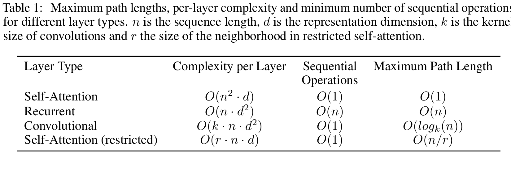
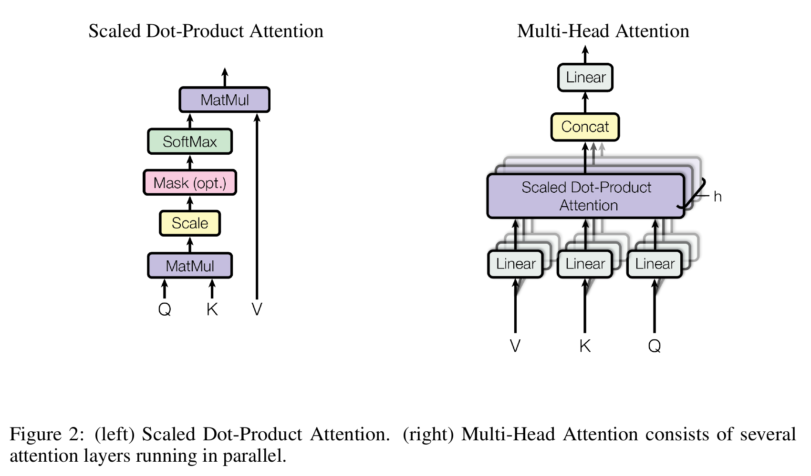
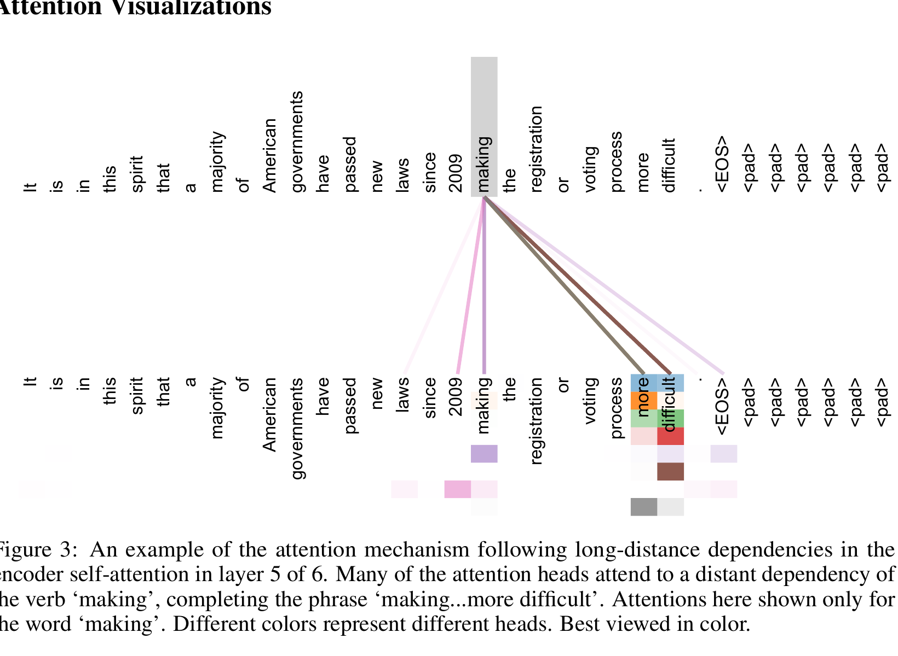
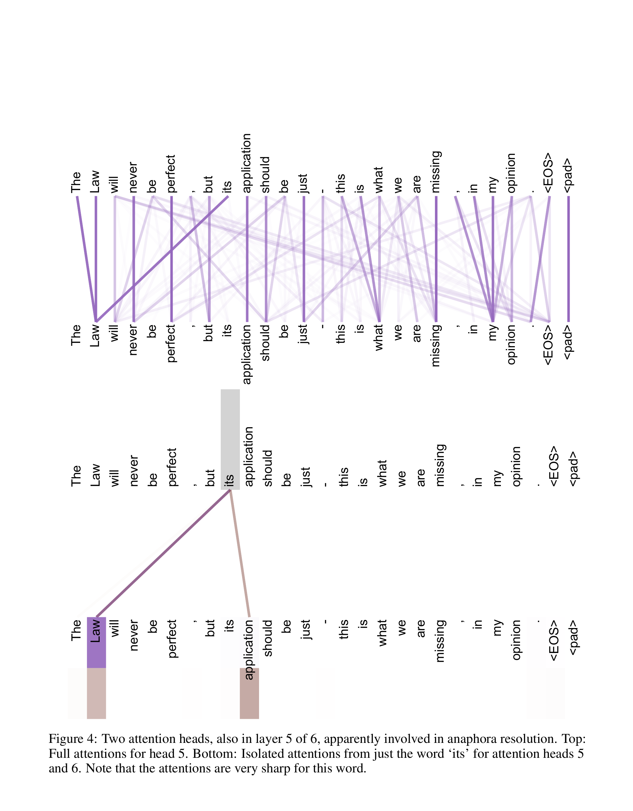
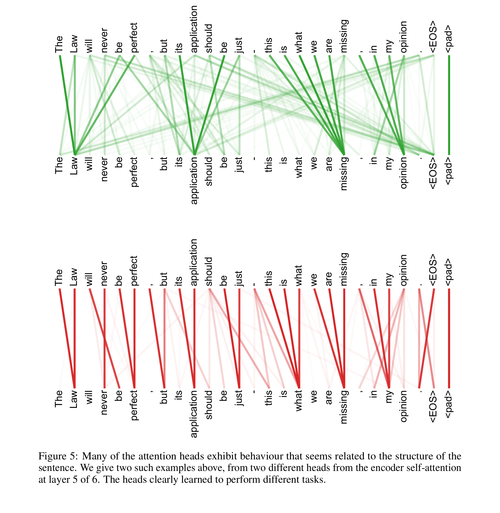
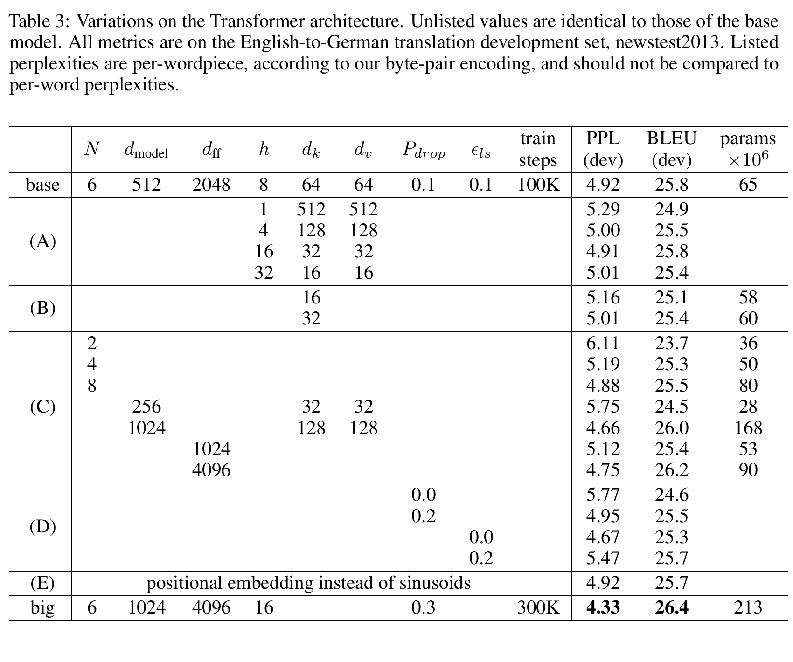
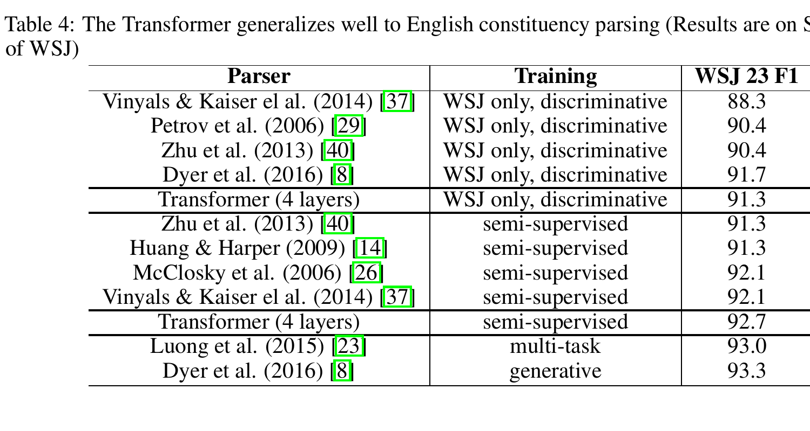

By the end, you will be able to calculate one attention update, trace the shapes through an encoder-decoder Transformer, explain what masking and position contribute, and read the paper's translation evidence without overclaiming it.
Attention Is All You Need · Ashish Vaswani, Noam Shazeer, Niki Parmar, Jakob Uszkoreit, Llion Jones, Aidan N. Gomez, Łukasz Kaiser, Illia Polosukhin · NIPS 2017
1. Prerequisite bridge: a weighted conversation
You already know a weighted average: multiply each candidate value by a weight, then add. Attention makes the weights depend on a question asked by the item being updated.
Imagine a seminar in which every word holds a note. When the word it updates its note, it asks the room a question such as “which earlier noun could I refer to?” Each word advertises what it knows; the best matches speak most loudly. The updated note is a weighted mixture of their messages.
The analogy has a boundary. A trained Transformer does not receive English questions such as “find my antecedent.” It learns vector projections. The seminar is useful because it keeps three roles separate: the request, the searchable label, and the information returned.
Query: the request
“What information would help me update?” One query is created for every position being updated.
Key and value: label and message
The key decides how well a source matches the query. The value is what that source contributes after the match becomes a weight.
2. The problem and the 2017 baseline
Machine translation maps one sequence to another. Before the Transformer, strong systems usually used a recurrent encoder and decoder, sometimes with attention between them. A recurrent state at position t depends on the state at t - 1, so positions inside one training example form a sequential chain.
Recurrent route
Process positions in order.
Needs sequential operations per layer.
A distant dependency crosses an -length path.
Self-attention route
Compare all allowed positions in parallel.
Needs sequential operations per layer.
Any two positions connect through an -length path.
The trade-off is not “attention is always cheaper.” The paper gives self-attention per-layer complexity versus recurrent . Self-attention is computationally favorable when sequence length n is smaller than representation width d, the translation regime the authors emphasize. Its all-pairs matrix becomes expensive for long sequences.

Original paper Table 1 (PDF p. 6). This is the paper's compact reason for replacing recurrence: full self-attention gives a one-step path between positions and parallel work across positions, but pays an n squared cost. Read it as a comparison under the stated sequence-length and representation-width assumptions, not as a claim that full attention is cheapest for every sequence.
3. Name the actors, symbols, and shapes
Let nq be the number of positions asking questions, nk the number of positions that may be read, and dmodel the width of each representation. One head projects those representations into smaller query, key, and value spaces.
Object
Shape
Job
Representations that ask, and representations that can be read.
One request vector per querying position.
One searchable label per readable position.
One message per readable position.
Every allowed query-key compatibility score.
Row-normalized routing weights; every row sums to 1.
One weighted value mixture per query.
In encoder self-attention, and . In encoder-decoder attention, decoder states supply queries while encoder outputs supply keys and values, so the two sequence lengths can differ.
4. Scaled dot-product attention, one operation at a time

Original paper Figure 2 (PDF p. 4). The left pipeline is the equation unpacked: score, scale, optional mask, normalize, then mix values. The right side answers the next question: multi-head attention repeats that routing calculation in several learned projection spaces before combining the results.
Project roles. Learned matrices turn the same incoming representation into Q, K, and V. A role is learned, not an intrinsic property of a token.
Score matches. Each query-key dot product measures compatibility. The score matrix has one row per query and one column per readable source.
Scale. If query and key components have variance 1 and are independent, their dot product has variance . Dividing by keeps large dimensions from pushing softmax into very small-gradient regions.
Normalize each row. Softmax converts scores into positive weights summing to 1 across readable keys.
Route values. Multiply the weight row by V. Keys determine where to read; values determine what is returned.
Lesson diagramThe query chooses a distribution over keys; that same distribution blends the paired values. This is a teaching calculation, not a visualization of weights measured from the paper's trained model.
5. Worked trace I: calculate one attention row
Use the query , three keys, and three values. The vectors are deliberately tiny so every operation is visible.
Token
Key
Value
animal
2
street
-1
tired
1
The output is not a hard pointer to animal. It is a new representation dominated by the animal value, with smaller contributions from the other values. Softmax gives every finite score a positive weight; a mask is what makes a connection exactly unavailable.
Lesson diagram
Routing bench. Keep the same keys and values; change only the query. Predict which station will receive the largest weight, then select a query.
animalkey [2, 0]
62.0%
streetkey [-1, 1]
7.4%
tiredkey [1, 0]
30.6%
For “it”, the scaled scores are 1.414 for animal, -0.707 for street, and 0.707 for tired. The two output coordinates are approximately 0.926 and 0.380.
Static reading: the default query [1,0] aligns most strongly with animal's key [2,0]. Changing the query changes routing even though the memory keys and values stay fixed.
This exact toy instrument computes scaled dot products, row-wise softmax, and the value mixture. Its purpose is to expose the mechanism; its vectors are not paper measurements.
6. From one head to a Transformer block
The base model uses heads with and . Each head gets its own learned projections. The eight 64-wide outputs concatenate back to 512 dimensions and pass through a learned output projection.
Exchange across positions
Multi-head attention lets each position collect information from other allowed positions. Different projections give heads the capacity to route through different representation subspaces; the architecture does not guarantee that every head learns a neat human concept.
Transform within a position
The feed-forward network applies the same two-layer MLP separately to every position: . In the base model it expands 512 → 2048 → 512.
Preserve and normalize
The original paper wraps each sublayer as : residual addition first, layer normalization second. Later “pre-norm” Transformers change this order.
Inject sequence order
Attention alone is permutation-equivariant. The paper adds sinusoidal positional encodings to token embeddings so identical tokens at different positions enter with different representations.
Different heads can learn different routing patterns, but that is an observed possibility rather than a promise of the architecture. The paper's appendix gives concrete examples after training.

Original paper Figure 3 (PDF p. 13). For the word making, several heads put substantial weight on the distant phrase “more difficult.” It makes the short-path claim tangible: a learned attention edge can connect far-apart tokens in one layer. It is one qualitative example, not evidence that every head or sentence behaves this way.

Original paper Figure 4 (PDF p. 14). These two heads sharply route from its toward earlier context in one sentence, an example the authors associate with anaphora resolution. The figure illustrates a pattern in a trained model; it does not establish that an attention map alone is a complete explanation of a prediction.

Original paper Figure 5 (PDF p. 15). Two heads in the same encoder layer emphasize different sentence structure. This is evidence for the paper's qualitative observation that separate projections can support different routing patterns, not a guarantee of neatly named roles for every head.
7. Predict before reveal: who may the decoder read?
During training, suppose the shifted target input has four positions: <start>, Das, Tier, schläft. When computing the representation at target position 3, may it attend to position 4?
No. Position 3 may use positions 1 through 3, never position 4. The model sets forbidden logits to -∞ before softmax, so their weights become zero. Training can compute all rows in parallel because the known target is present, but the mask prevents target leakage.
Training parallelism does not remove autoregressive generation. At inference, the next target token does not yet exist. The decoder predicts one token, appends it to the prefix, and runs again.
8. Worked trace II: follow one decoder step by shape
Take a four-token source and a three-token target prefix. Use the base model dimensions: dmodel = 512, eight heads, and 64 dimensions per head. The goal is to predict a distribution for the next target token.
Stage
Per-head calculation
What it means
Encoder self-attention
Q,K,V: 4×64 → scores: 4×4 → head output: 4×64
Each source position may read every source position.
Concatenate 8 heads
8 × (4×64) → 4×512
Every source position now carries a context-aware 512-wide representation.
Decoder masked self-attention
Q,K,V: 3×64 → masked scores: 3×3
The third target position reads target positions 1-3, not any future target.
Encoder-decoder attention
Q: 3×64; K,V: 4×64 → scores: 3×4 → output: 3×64
Each target position asks the encoded source a different question.
Concatenate and refine
8 × (3×64) → 3×512 → FFN 512→2048→512
Cross-source messages are combined, then each target position is transformed locally.
Predict next token
last row 1×512 → vocabulary logits → softmax
Only the final prefix position is used to choose the next token during generation.
The central distinction is visible in the score shapes. Decoder self-attention builds a target-to-target matrix, 3×3. Cross-attention builds a target-to-source matrix, 3×4. The latter is the bridge between the two towers.
9. Assemble the complete encoder-decoder
The paper stacks six encoder layers and six decoder layers. The encoder alternates self-attention and position-wise feed-forward sublayers. The decoder adds a third sublayer: encoder-decoder attention between its masked self-attention and feed-forward network.
Original paper Figure 1 (PDF p. 3). The encoder is on the left and decoder on the right. “Add & Norm” means the paper's post-norm residual form, and “Outputs (shifted right)” supplies each decoder position only the preceding target prefix.
Read the arrows as information permissions. Encoder self-attention reads the full source. Masked decoder self-attention reads the target prefix. Encoder-decoder attention uses decoder queries to read all encoder outputs. The final linear layer and softmax turn a decoder representation into next-token probabilities.
10. What the paper's evidence supports
The central experiments use WMT 2014 machine translation. The authors trained on about 4.5 million English-German sentence pairs and 36 million English-French sentence pairs. The base model trained for 100,000 steps (about 12 hours) and the big model for 300,000 steps (3.5 days), each on eight NVIDIA P100 GPUs.
Original paper table
Model
BLEU
Training cost (FLOPs)
EN-DE
EN-FR
EN-DE
EN-FR
ByteNet
23.75
-
-
-
Deep-Att + PosUnk
-
39.2
-
GNMT + RL
24.6
39.92
ConvS2S
25.16
40.46
MoE
26.03
40.56
Deep-Att + PosUnk Ensemble
-
40.4
-
GNMT + RL Ensemble
26.30
41.16
ConvS2S Ensemble
26.36
41.29
Transformer (base)
27.3
38.1
-
Transformer (big)
28.4
41.8
-
Reconstruction of original paper Table 2 (PDF p. 8). Dashes mark cells left blank in the source table. The big Transformer reached 28.4 BLEU on English-German and 41.8 on English-French; the table reports training-cost estimates only in the English-German column for the Transformer rows.
Table 2 says the complete system performed well. The next source table changes one design choice at a time, which is closer to the question “what parts of this recipe mattered in this experiment?”

Original paper Table 3 (PDF p. 9). In this English-German development-set ablation, one head is 0.9 BLEU below the best head setting in group A; reducing key size also hurts, while learned positional embeddings and sinusoids are nearly tied in row E. These are coupled changes in the paper's base configuration, so the table supports local design evidence rather than universal hyperparameter rules.
The authors also test a structurally different task: English constituency parsing. That matters because translation alone cannot show whether the backbone transfers to another sequence-to-sequence setting.

Original paper Table 4 (PDF p. 10). A four-layer Transformer reaches 91.3 F1 in the WSJ-only discriminative row and 92.7 in the semi-supervised row. The comparison broadens the paper's evidence beyond translation, but it is still one parsing benchmark with its stated training regimes—not a claim of universal task transfer.
Quality claimThe big Transformer exceeds the listed English-German ensemble baselines by more than 2 BLEU and has the highest listed English-French BLEU.
Efficiency claimThe base model's reported English-German training cost, FLOPs, is below every comparison row with an English-German cost.
Scope boundaryThese are 2014 WMT test sets, the paper's tokenization and decoding setup, and estimated training FLOPs - not a universal latency or quality guarantee.
Evidence-reading check: why not quote “41.8 BLEU” alone?
Because BLEU is meaningful only with its task, test set, model setting, and comparison conditions. Here it is the big model on WMT 2014 English-French newstest2014. Also note a source inconsistency: the abstract and Table 2 report 41.8, while the Section 6.1 prose says 41.0. This lesson uses the table and abstract value and makes the location explicit.
11. Limitations and misconception checks
Quadratic pair matrix. Full self-attention forms an n × n score matrix per head, so long sequences are costly.
Generation remains sequential. Training positions parallelize under a causal mask; autoregressive output tokens still arrive one at a time.
Order is not automatic. The paper must add positional encodings because content-only attention does not identify order.
Translation evidence is scoped. The original results do not by themselves establish today's language-model scaling behavior or every other modality.
Attention is not a full explanation. A routing weight shows contribution inside one operation, not a complete causal account of a model decision.
Short paths are not free understanding. path length makes interaction direct; learning the right interaction still depends on data and optimization.
Misconception: “A token has one permanent query, key, and value.”
No. Q, K, and V are contextual, learned projections of the current layer's representations. They change across layers, heads, positions, and inputs.
Misconception: “Multi-head attention means eight identical attention maps.”
No. Each head has its own learned projection matrices. That gives heads capacity to learn different routing patterns, although it does not guarantee eight cleanly interpretable roles.
Misconception: “The decoder's two attention sublayers do the same job.”
No. Masked self-attention reads the target prefix. Encoder-decoder attention uses target-side queries to read source-side encoder outputs.
Misconception: “The original Transformer used today's common pre-norm block.”
No. The paper states , usually called post-norm. Many later Transformers move normalization before the sublayer.
12. Active recall
Answer aloud or on paper before opening each response.
1. What does contain, and what is its shape?
It contains every query-key compatibility score. Its shape is : one row per query and one column per readable key.
2. Why divide dot products by ?
Under the paper's simple independent, unit-variance assumption, dot-product variance grows with . Scaling keeps score magnitudes controlled so softmax is less likely to enter tiny-gradient regions.
3. Keys and values come from the same positions. Why keep them separate?
Keys determine how strongly a position matches a query; values carry the information that is mixed. The model can learn a searchable label that differs from the returned content.
4. What are the Transformer's three attention sites?
Encoder self-attention; masked decoder self-attention; and encoder-decoder attention, where decoder states provide queries and encoder outputs provide keys and values.
5. Which operation communicates across positions, and which transforms positions independently?
Attention communicates across allowed positions. The position-wise feed-forward network applies the same MLP independently to each position.
6. Why can training parallelize target positions while generation cannot?
During training, the complete target is available and a causal mask blocks illegal future information, so all rows can be computed together. During generation, the next token does not exist until the previous prediction has been appended.
7. State one result and one limitation without overclaiming.
Result: the big Transformer reports 28.4 BLEU on WMT 2014 English-German newstest2014, above the listed prior systems and ensembles. Limitation: full attention has an n × n pair matrix, and the experiments do not establish universal superiority on every sequence task.
13. Connect it to your mental map
ResNet: preserve, then revise
A Transformer residual path preserves a representation while an attention or feed-forward branch proposes an additive update. The paper adopts the same optimization grammar you saw in residual networks, now around token communication.
GCN: fixed versus learned neighborhoods
A graph convolution aggregates across edges supplied by a graph. Self-attention constructs a dense, input-dependent routing matrix. Both are message passing; one starts from fixed adjacency, the other learns weights among allowed token pairs.
Adam: architecture versus optimization
The Transformer specifies how representations communicate. Adam specifies how parameters update. The paper uses Adam with a warm-up and inverse-square-root learning-rate schedule; the architecture and optimizer solve different problems.
DPO: backbone versus post-training objective
Modern preference optimization often changes a Transformer's parameters, but DPO's pairwise loss is not part of attention. Keep backbone mechanism, pretraining objective, and post-training objective as separate layers in your map.
14. Takeaway
Native intuition: a Transformer is repeated learned routing plus local revision. Each token asks through a query, matches allowed keys, mixes their values, then refines the result through a feed-forward network while residual paths preserve what was already known. Position tells the model where tokens are; masking tells it what information is legal. The 2017 contribution was to make this exchange-and-refine pattern the whole encoder-decoder backbone rather than an accessory to recurrence.